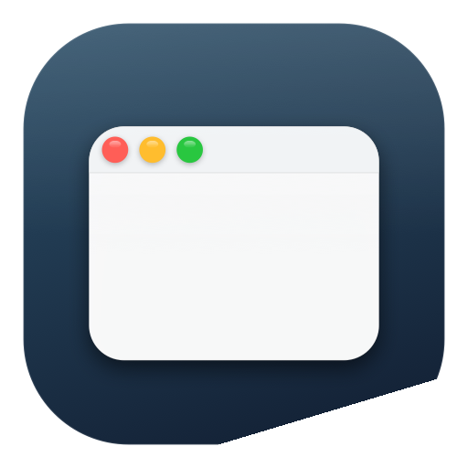

The fastest window manager for macOS.
Halves, corners, thirds, maximize, center, monitor cycle, 3×3 grid cells. Every shortcut rebindable.
Hold a chord, the menu appears under your cursor. 13 actions in one mouse flick. Only one in the App Store.
Drag a window to any edge, see the target glow, release to snap. Configurable padding 0–32 px.
Toast badge shows destination display by name. Auto-rescues orphan windows when displays unplug.
2×2, 3×2, 3×3, 4×3, 4×4. Auto-arrange places all open windows into the optimal grid by count.
No data collection. No tracking. No network. Accessibility used only locally to move windows.